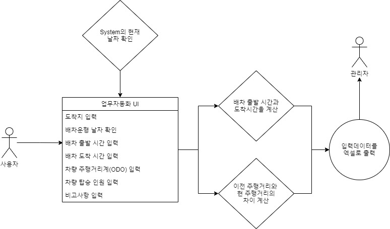
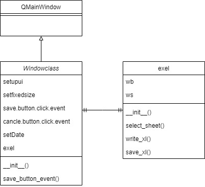

- Home
- 개인프로젝트
- 업무자동화
- 팀프로젝트
- 사진관 플랫폼
- Python
- Java
- R
- Oracle
- Html
파이썬 업무자동화
코드 :
깃허브 bus_log_Project
개발 목적
버스 기사님들의 차량운행 기록을 위한 프로그램 개발합니다.
개발환경
os : windows 10 Pro
language : python 3.9
IDE : pycharm
package : PyQt5, openpyxl, pyinstaller
요구사항
- 배차 운행 기록을 엑셀에 입력합니다.
- 사용자의 연령은 50대로 엑셀 다루는 능력이 없습니다.
- 그래픽 UI를 이용하여 데이터를 입력하고 싶습니다.
- 잘못된 정보를 입력할 경우 입력이 최소 되거나 경고로 알립니다.
함수별 기능
| UI class | |
|---|---|
| exel_class | UI 클래스 내부에서 exel 클래스를 생성하여 사용합니다. |
| __init__ | 1. UI를 실행하고 QMainWindow Class를 상속 받습니다. |
| 2. 저장, 취소, 날짜, exel 클래스를 설정합니다. | |
| saveEvent | 1. 저장버튼 클릭시 실행할 함수로 입력 데이터를 엑셀에 저장합니다. |
| 2. 저장 성공, 실패를 알려주고 성공 시 프로그램을 종료합니다. | |
| exel class | |
| __init__ | exel 파일을 불러옵니다.(작업중이던 파일이 없을경우 백업파일을 불러옵니다.) |
| select_sheet | 운행구간에 따른 해당 시트를 선택하여 엑셀 시트를 활성화합니다. |
| write_xl | 데이터를 입력받아 운행시간, 주행거리를 계산하여 순서대로 시트에 입력합니다. |
| save_xl | 엑셀을 지정한 이름으로 저장하고 종료합니다. |
UI 디자인

프로그램 순서

class 다이어그램

엑셀 결과물